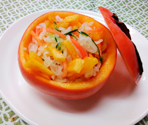

柿なます
- 調理時間：30分
- （一人当たり）
- カロリー：128kcal
- たんぱく質：1.2g
- 脂質：0.2g
- 炭水化物：31.1g
- 塩分：1.3g


＜2人分＞
- 大根
- 200g
- ニンジン
- 30g
- 塩(下ごしらえ用)
- 少々
- 柿
- 1個
(柿釜含め) - キュウリ
- 30g
- 砂糖
- 大さじ2
- 塩
- 小さじ1/3
- だし汁
- 100ml
- 米酢
- 大さじ4


- 小鍋に出し汁、砂糖、塩を入れて火にかける。
沸騰する前に火を止め、米酢を加えて合わせ、冷ましておく。 - 大根とニンジンは棒状のなます切りにしてボウルに合わせる。
そこに塩少々を加えて軽く混ぜ、10分程置いて塩を馴染ませる。 - 柿は蓋になる部分を切り、中をくり抜く。
くり抜いた柿は短冊切りにする。 - キュウリは細切りにする。
- 大根とニンジンの水気を強く絞り、キュウリと柿と合わせ、①の甘酢に漬ける。
味が馴染んだら柿釜に盛り付け完成
柿なます
なますと言えば、大根と人参を細く切った酢の物を思い出しますね。しかし、古書に記されている「膾(なます)」の字には刻んだ肉という意味があるため、生肉(なましし)から、なますになった等の諸説あります。かつてのなますは生魚や生肉、大根、にんじんを酢で和える料理でした。紅白なますの大根は、年始過ぎの疲れた胃を助けてくれる消化酵素を各種含みます。加熱調理で身体を温め、生食調理で酵素を補う。食養生で厳しい冬を凌ぎましょう。